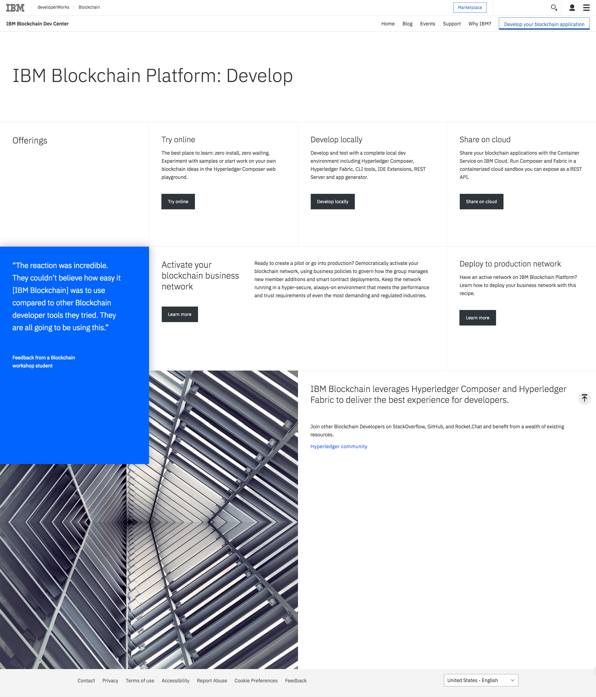

Who am I?
A brief history of
me.
tl;dr
Degree in Computer Science and Artificial Intelligence + passion for design = this website + this CV.
The spark
Whenever I think back to write something like this, I always end up with one particular moment which led me down the path I’ve chosen to take. Back in the first year of secondary school, around age 12, I remember opening the default Windows Notepad app to follow along with a HTML and CSS tutorial I found online.
It was at that moment where I discovered my passion of taking a seemingly simple idea, writing a few lines of code and producing a tangible end product.
Almost 10 years later, here I am writing another about me page, however this time I like to believe it looks a lot better.
Education
I took that interest all the way up to university where I’m currently in the final year of my degree studying Computer Science and Artificial Intelligence at Loughborough University.
Experience
As part of my degree, I recently completed a year working at IBM as a blockchain software developer. This role involved developing production-ready open-source software; I was part of the complete development process from planning and coding to testing and deployment.
Below is one of the deliverables I completed in the year - the IBM Blockchain Platform: Develop webpage. This was a collaboration with the design team, offering managers and marketing teams. I coded the front-end of the site whilst working to a close deadline ready for launch.
It was at IBM where I formally decided to take a slightly different career path and focus on pursuing my passion for design. Seeing how design has become such an integral part of how IBM operate, through hands-on work with the design team to being a driver in a research workshop, outlined the direction I want to take.
Upon returning to uni for my third year I had to create a poster summarising my year in industry. You can view the poster (which won the prize for best poster) here.
A passion for design
The one trend which has always been prevalent in my projects is that I get the most buzz from designing the UI, coding the front-end and making the graphics. For as long as I can remember I’ve filled my spare time with creative outlets, from drawing tattoos for friends and family to designing logos for real businesses and clients.
After being introduced to user research within projects at IBM and through work at university, I became fascinated with gathering user data and analyse it to find trends and insights which in turn can lead to more useful design decisions. This topic is at the core of my current project; using the vast amounts of data linked to a user's Spotify account and saved songs to accurately predict music for multiple people's tastes.
Therefore, taking the step to combine my technical education in Computer Science and my passion for design has resulted in you reading this portfolio, and I hope you find something you like!
CV
For a more formal introduction you can download my CV here.